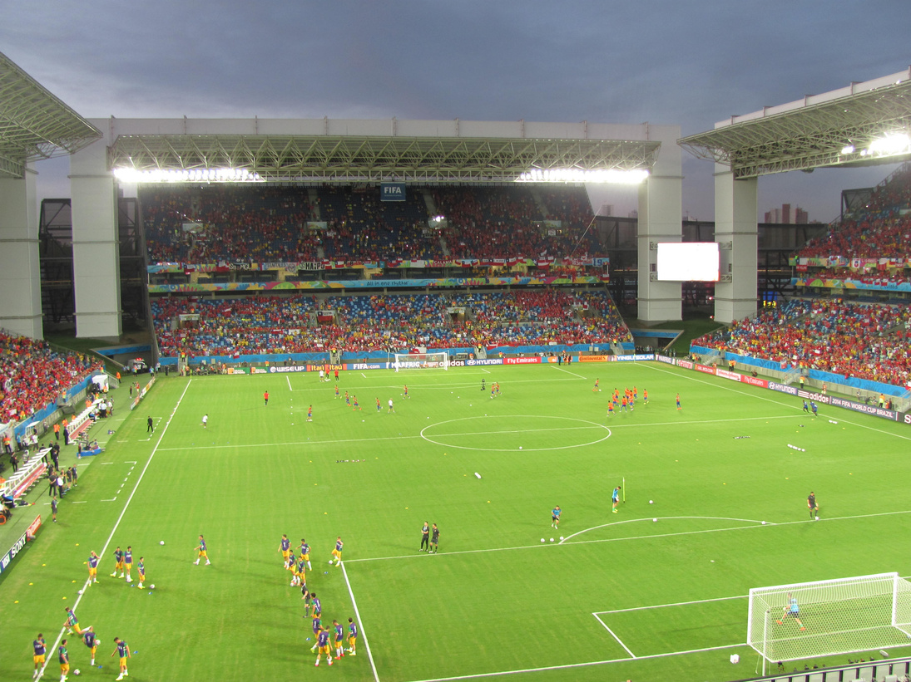

Cada cuatro años el mundo se para por el Mundial de fútbol. Millones de personas gritan, festejan y sufren por un partido. Pero detrás de toda esa pasión que vemos en la tele hay algo que no se ve a simple vista: la química. Desde la copa que levantan los campeones, todo tiene una explicación.
Aunque parezca que el fútbol es solo un deporte, si lo miramos con ojos de científicas y científicos nos damos cuenta de que en cada jugada, en cada corrida y en cada objeto del juego está pasando una reacción química.
La energía de los jugadores: ¿de dónde sale la fuerza para correr los 90 minutos del partido?
Cuando un jugador corre, su cuerpo necesita energía. Esa energía viene de lo que comió en el día, sobre todo de la glucosa, que es un tipo de azúcar.
Dentro de nuestras células pasa una reacción química llamada respiración celular. La fórmula es simple: GLUCOSA + OXÍGENO → ENERGÍA (ATP) + DIÓXIDO DE CARBONO + AGUA.
Cuando el esfuerzo es muy grande y no llega suficiente oxígeno, el cuerpo realiza otra reacción y se produce ácido láctico. Por eso sentimos calambres y cansancio muscular.
La Copa del Mundo: ¿por qué es de oro?
La Copa del Mundo no es de oro macizo porque sería demasiado pesada, pero está cubierta de oro de 18 quilates. ¿Por qué oro y no otro metal? Porque el oro es un metal muy especial: no se oxida, no se mancha ni se pone feo con el tiempo, como el hierro; es muy brillante y no pierde su color, por eso representa algo valioso y eterno; y se puede moldear para hacer la forma de la Copa sin romperse.
Si fuera de hierro o de plata, con los años se oxidaría y perdería el brillo. El oro simboliza que el título de campeón del mundo no se mancha nunca.

La química está en todos lados, y también en el fútbol. Sin la energía de la glucosa los jugadores no podrían correr, y sin las propiedades del oro la Copa no brillaría para siempre. El Mundial muestra que la ciencia también entra en la cancha.